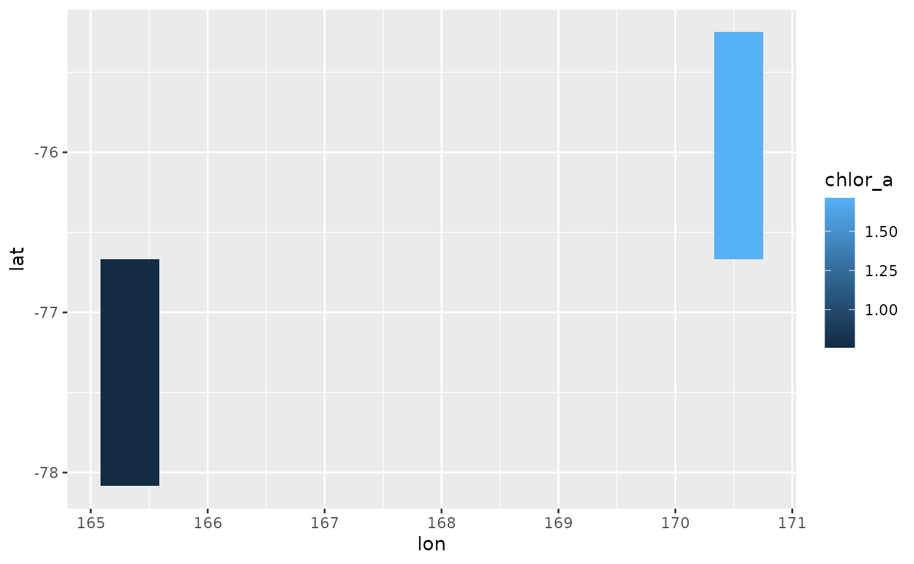

Extract the raw array data as an expanded data frame. This can be the entire
variable/s or after dimension-slicing using hyper_filter() expressions with
dimension values expanded appropriately for each element in the arrays (one
row per element).
hyper_tibble(x, ..., na.rm = TRUE, force = FALSE)
# S3 method for character
hyper_tibble(x, ..., na.rm = TRUE, force = FALSE)
# S3 method for tidync
hyper_tibble(x, ..., na.rm = TRUE, force = FALSE)NetCDF file, connection object, or tidync object
arguments to `hyper_filter``
if TRUE these rows are not included in the output when all
variables are NA
ignore caveats about large extraction and just do it
a tbl_df
The size of an extraction is checked and if quite large there is an a user-controlled
prompt to proceed or cancel. This can be disabled with options(tidync.large.data.check = FALSE)
please see hyper_array() for more details.
The function hyper_tibble() will act on an existing tidync object or a source
string.
By default all variables in the active grid are returned, use select_var to
limit.
hyper_array() and hyper_tbl_cube() which are also delay-breaking
functions that cause data to be read
l3file <- "S20080012008031.L3m_MO_CHL_chlor_a_9km.nc"
f <- system.file("extdata", "oceandata", l3file, package= "tidync")
rnc <- tidync(f)
hyper_filter(rnc)
#>
#> Data Source (1): S20080012008031.L3m_MO_CHL_chlor_a_9km.nc ...
#>
#> Grids (4) <dimension family> : <associated variables>
#>
#> [1] D1,D0 : chlor_a **ACTIVE GRID** ( 9331200 values per variable)
#> [2] D3,D2 : palette
#> [3] D0 : lat
#> [4] D1 : lon
#>
#> Dimensions 4 (2 active):
#>
#> dim name length min max start count dmin dmax unlim coord_dim
#> <chr> <chr> <dbl> <dbl> <dbl> <int> <int> <dbl> <dbl> <lgl> <lgl>
#> 1 D0 lat 2160 -90.0 90.0 1 2160 -90.0 90.0 FALSE TRUE
#> 2 D1 lon 4320 -180. 180. 1 4320 -180. 180. FALSE TRUE
#>
#> Inactive dimensions:
#>
#> dim name length min max unlim coord_dim
#> <chr> <chr> <dbl> <dbl> <dbl> <lgl> <lgl>
#> 1 D2 rgb 3 1 3 FALSE FALSE
#> 2 D3 eightbitcolor 256 1 256 FALSE FALSE
library(dplyr)
lapply(hyper_array(f, lat = lat > 0, lon = index > 3000), dim)
#> $chlor_a
#> [1] 1320 1080
#>
ht <- hyper_tibble(rnc) %>%
filter(!is.na(chlor_a))
ht
#> # A tibble: 11 × 3
#> chlor_a lon lat
#> <dbl> <dbl> <dbl>
#> 1 1.71 170. -76.0
#> 2 1.71 170. -76.0
#> 3 1.71 171. -76.0
#> 4 1.71 171. -76.0
#> 5 1.71 171. -76.0
#> 6 0.759 165. -77.4
#> 7 0.759 165. -77.4
#> 8 0.759 165. -77.4
#> 9 0.759 165. -77.4
#> 10 0.759 165. -77.4
#> 11 0.759 166. -77.4
library(ggplot2)
ggplot(ht %>% filter(!is.na(chlor_a)),
aes(x = lon, y = lat, fill = chlor_a)) + geom_tile()
